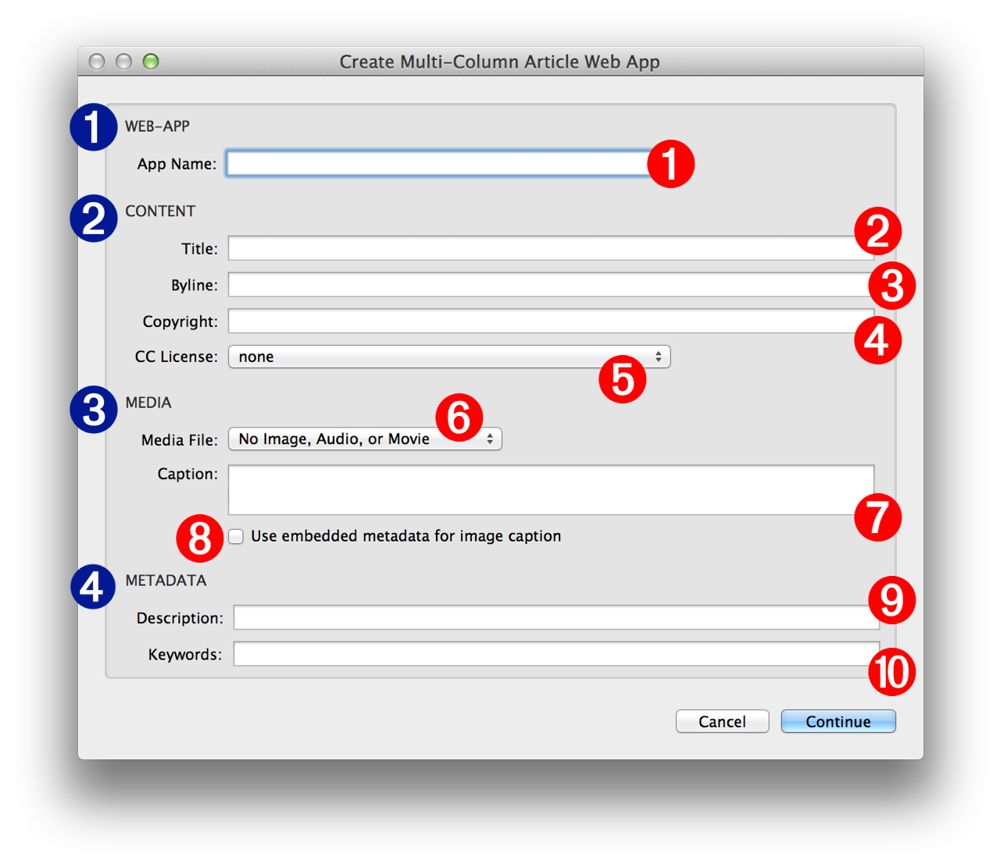

Every installation of OS X, whether on a desktop or laptop computer, has a built-in architecture for executing automation “recipes” called “workflows.” Automation workflows are created using the Automator application and can be saved in a variety of formats, including as service plugins that appear as menu items on contextual menus in applications and the Finder.
When a contextual system service is selected by the user, its related workflow file is executed by the operating system, using the current selection (often selected text or files) as the source material to be processed by the service workflow.
Workflows are composed of a series of one or more individual steps called “actions.” Like the individual steps in a kitchen recipe, each action in the workflow processes the material passed to it by the previous action, and then passes the results of it processes to the action that follows it, until all steps (actions) of the automation recipe have been completed.
Many of the Automator actions that are used to create workflows have interfaces containing user-settable controls that determine the parameters for how the individual action processes the data passed to it. To provide maximum flexibility in workflow design, these actions may be set to display their interfaces when their parent workflow is run, in order to allow the user to dynamically provide input or set parameter values.
The Automator action used by the provided system service in this tutorial is designed to display its interface when its parent system service workflow is run. The following describes each of the controls or input fields of the action, and how they are used.
For an overview of Automator, watch this short video. For an overview of Services, watch this short video.
The interface for the Create Multi-Column Article Web App action is divided into four sections:
1 Application:
1 App Name - Enter the name for the created folder containing the HTML content. Keep in mind that this folder can be placed on a server as a web-application, so its name should be free of spaces and special characters.
2 Content:
2 Title - Enter the title of the article in this text field.
3 Byline - Enter the author attribution in this text field.
4 Copyright - Enter any copyright information in this text field. Copyright data will be placed at the end of the article.
5 Creative Commons license - You may choose to distribute your work under a license from the Creative Commons organization. Pick one of the licensing options from this popup menu and the cooresponding CC license will be added to the end of the article.

3 Media:
6 Media File - Optionally, the article can contain a single image, audio, or video file, which will be placed at the beginning of the article. Chosen image files will be copied and scaled to fit within 1024 pixels. A chosen audio file in AIFF, WAVE, or SDII format, will be copied and encoded automatically to MPEG (ACC) format for inclusion in the web-app bundle. Chosen video files will not be automatically encoded and are expected to be already encoded in iPad-captible MPEG format.
7 Caption - Enter a caption to be placed beneath the media file in the article layout.
8 Use Embedded Image Caption - Select this checkbox if you want to use the embedded IPTC description data in the chosen image, as the caption.
4 Document Metadata:
9 Description - Enter a description of the article to be placed in the header of the generated HTML file, for indexing by Internet search engines.
10 Keywords - Enter a comma-delimited list of keywords to be placed in the header of the generated HTML file, for indexing by Internet search engines.
NOTE: all of the text input fields in the action view accept Automator workflow variables as input
In the next segment, you’ll use the Create Article with Selected Text service to generate an example multi-column project.